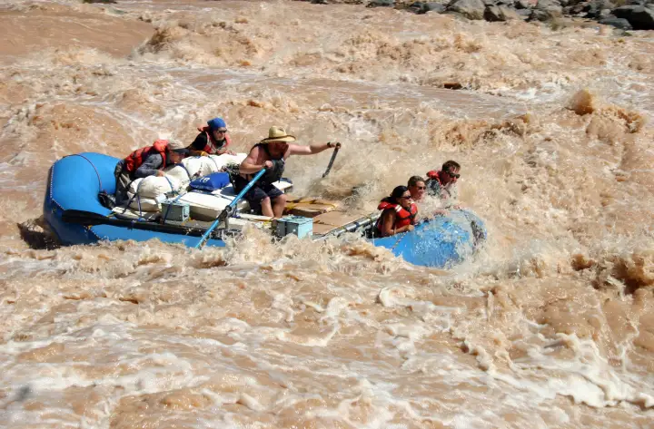
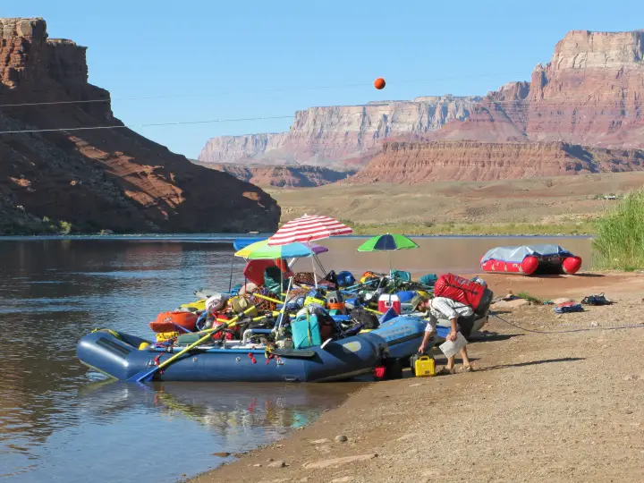

Grand Canyon of the Colorado
Lees Ferry to Diamond Creek · 226 river miles- Put-in
- Lees Ferry, mile 0, off US 89A at Marble Canyon
- Take-out
- Diamond Creek, mile 226 (Pearce Ferry, mile 280, for the full canyon)
- Length
- 226 miles · 12–25 days noncommercial
- Difficulty
- Big-water Class IV; Grand Canyon 1–10 scale, Lava Falls and Crystal at the top
- Season
- Year round; summer is hot, winter is quiet
- Permit
- NPS weighted lottery, drawn a year ahead
- Camps
- First-come beaches, no assignments
- Gauges
- Lees Ferry · text
grand canyon,phantom, ordiamond
grand canyon to
866-284-5181 from your inReach and the Lees
Ferry release comes back over satellite. No app, no account, no cell
service.


The river
There is nothing else like it, and everyone who has done it will tell you so at length. From the ramp at Lees Ferry, the only place a road touches the river between Glen Canyon Dam and Diamond Creek, the Colorado drops into Marble Canyon and then into the Grand Canyon proper, past the Little Colorado, through the Inner Gorge of black schist below Phantom Ranch, out into the wider western canyon, and over Lava Falls at mile 179. You are in it for two to three weeks. Mail does not come. The rim is a mile up.
The whitewater is big-volume and, by count, mostly flat: long stretches of green water between rapids you can hear before you see them. The named ones people plan the trip around are House Rock, Hance, Sockdolager and Grapevine in the gorge, Horn Creek, Granite, Hermit, Crystal, the Gems, Bedrock, Upset, and Lava Falls. On the canyon's own 1-to-10 scale most are 5s to 8s and Lava and Crystal are the 10s, but the scale moves with the flow: a rapid that is a clean wave train at 15,000 cfs can be a rock-strewn puzzle at 8,000.
The side canyons are as much the trip as the river: the Little Colorado's blue water, Nankoweap's granaries, Elves Chasm, Deer Creek, Havasu, Matkatamiba. A 21-day itinerary exists mostly so you can stop. The water is cold at any time of year (it comes off the bottom of Lake Powell at around 48 degrees), the summer air is not, and the wind blows upstream in the afternoon.
Which gauge people actually quote
Lees Ferry (USGS 09380000) is the number everyone means by "the flow." It sits just below Glen Canyon Dam at the launch ramp, so it reads the dam release rather than a natural river, which is why it rises and falls on a daily cycle with power demand instead of with weather. A reading taken at noon can differ by thousands of cfs from the same day at midnight, and that wave travels downstream with you, reaching Phantom the better part of a day later and Diamond Creek a day or two after that.
Two more gauges matter once you are moving. Text either name the same
way you text grand canyon:
phantom— Phantom Ranch, river mile 87- USGS 09402500. Mid-canyon, and the one worth checking before the Inner Gorge. It also picks up the Little Colorado, so a brown spike here after a storm is the LCR, not the dam.
diamond— Diamond Creek, river mile 226- USGS 09404200. The take-out gauge, and the one that tells you what the last stretch and the shuttle road are doing.
Reading the number
Dam releases through a typical season run in the neighborhood of 8,000–16,000 cfs, with higher experimental flows some years. Low water is slower and more technical through the rock gardens; high water moves fast and washes out some holes while making others much worse. Neither end is a go or no-go on its own, which is the point of checking it against the trip you actually planned. What the number tells you most usefully in the canyon is timing: whether you will hit Lava on the morning low or the afternoon high, and whether the beach you tied up on tonight will still be a beach at 3 AM.

The gauge is information, not permission. It cannot see a flash flood coming out of a side canyon, what the wind is doing, or what your group can handle. Scout, and make the call on the water.
Getting there and the shuttle
To the put-in
Lees Ferry is at the end of a paved spur off US 89A at Marble Canyon, about two and a half hours north of Flagstaff and forty minutes south of Page. Flagstaff is where private trips stage: the outfitters, the rental fleets, the grocery runs, and the last night in a bed. Marble Canyon and Lees Ferry Lodge have rooms and food at the river end, and there is an NPS campground at Lees Ferry. Most groups rig the afternoon before their launch date, get the ranger's orientation in the morning, and push off by midday.

.jpg){kind=link}
The take-out
Diamond Creek is on the Hualapai Reservation, at the bottom of a roughly 19-mile dirt road from Peach Springs on Route 66. The road follows the creek and crosses it repeatedly; a summer thunderstorm can close it for a day, which is worth knowing when you are choosing a take-out date in August. The Hualapai Tribe charges an access fee per person and per vehicle, on the order of sixty dollars each plus tax, payable in Peach Springs, and does not allow overnight parking at the creek, so vehicles come in the morning of your take-out and leave the same day. Pearce Ferry, 54 miles further at the head of Lake Mead, is the alternative for groups doing the full canyon; the miles below Diamond are flat, the wind is real, and Pearce Ferry Rapid at the very end is not runnable.
The shuttle
Lees Ferry to Peach Springs is about five hours by road through Flagstaff, and nobody on a 21-day trip wants a vehicle sitting at the ferry that long. The standard arrangement is a support company that stores your vehicles in Flagstaff (or Meadview) and delivers them to the Hualapai Lodge in Peach Springs a day or two before your take-out. Most of them also rent boats, rig your kitchen, and drive your people; the Park Service keeps a list of noncommercial trip support companies.
- River Runners Shuttle Service
- Vehicle shuttle from Lees Ferry to storage in Meadview, delivered to Peach Springs on take-out morning.
- Canyon REO
- Flagstaff outfitter; rentals and the full shuttle with vehicles stored in Flagstaff between put-in and take-out.
- Ceiba Adventures
- Flagstaff; rentals, food packs, and Flagstaff-to-Lees-Ferry and Flagstaff-to-Diamond-Creek transport.
- Moenkopi Riverworks
- Flagstaff; rentals, rigging, and people-and-gear transport to and from the river.
- Professional River Outfitters
- Flagstaff; rentals and logistics, with a useful page on the Diamond Creek take-out.
Permits and season
Private trips launch from Lees Ferry on a weighted lottery run by Grand Canyon National Park. The main lottery for a given year runs in February of the year before: the 2027 launches were drawn from applications taken in February 2026, with a few hundred permits for 12-to-25-day trips. Points accumulate for every year you apply and do not go, which is the "weighted" part. Follow-up lotteries through the year re-offer cancelled and unclaimed dates and are the realistic way onto the river on short notice. Commercial trips go through the park's concessioners on a separate allocation.
There is no off-season. Summer launches are hot and busy and the monsoon brings flash floods in the side canyons; winter launches are cold, empty, and easier to draw, with short days and long nights. Confirm dates and rules with the park's river permits office. This page tracks water, not paperwork.
Camps
No assignments, no reservations. Camps in the canyon are first-come sand beaches, and the etiquette is that the trip ahead of you has the beach it is on. With a dozen trips spread through 226 miles that usually sorts itself out, but the popular camps near the big side canyons and above Lava fill early in the afternoon in summer, and the park's camp list marks which beaches are small, which are large, and which are closed for restoration. Because the release cycles daily, a camp set up at the afternoon high will have more beach by morning, and one set up at the low can lose its kitchen overnight; tie the boats long.
How the text line works out there
There is no cell service anywhere between Lees Ferry and Diamond Creek, and the rim is a day's hike away. Save 866-284-5181 as a contact on your inReach (or your phone, if it does satellite texting) while you still have signal in Flagstaff, and text the run name. One reply comes back over the satellite, the same way a message from home would:
That is the whole product. It costs nothing beyond whatever your device
charges for a message, there is no account, and you get exactly one
reply per text. Down in the canyon it is the difference between knowing
the release and guessing at it: text grand canyon to see
what the dam did today, phantom to see it arriving
mid-canyon, and diamond the night before take-out.
Details and the failure modes are on the
how it works page.
Before you launch
Save the number to your phone and to your inReach while you still have signal, and send yourself a test message from Flagstaff. See how it works, or browse every run LateBoof knows.